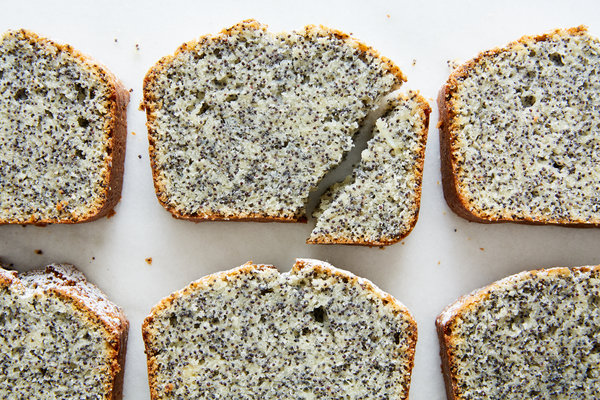

Poppy Seed cake recipe

Description
Poppy Seed cake is the most delicious cake in the entire universe.
if you do not think so, you are living in a lie or maybe stuck in a .5 dimension.
Ingredients
- 1 cup poppy seeds
- 1 cup milk or soy milk
- 1 cup (8 ounces) unsalted butter or pareve margarine, plus more for greasing pan
- 2 cups all-purpose flour, plus additional for dusting pan
- 2 cups sugar
- 3 large eggs, separated
- 2 teaspoons vanilla extract
- 0.5 teaspoon salt
- 2.5 easpoons baking powder
Confectioners' sugar, for dusting
Steps
-
In a small saucepan, combine the poppy seeds and milk. Bring to a boil, remove from heat, and allow to rest until cool, about 20 minutes.
-
Preheat oven to 350 degrees and prepare a large loaf or tube pan by greasing it with margarine and lightly flouring the inside of the pan.
-
In bowl of an electric mixer with a paddle attachment, cream together butter or margarine and sugar. Add egg yolks, vanilla, and poppy seed-milk mixture, and beat until smooth. Gradually add 2 cups flour, salt and baking powder. Mix well; remove bowl from mixer and set aside.
-
Place a clean bowl in mixer, with a whisk attachment, and whisk egg whites until stiff but not dry. Gently fold into batter. Scrape into pan, and bake until a knife inserted into the cake comes out clean, about 1 hour. Transfer cake to a rack. Unmold after 15 minutes. When cool, dust cake with confectioners’ sugar.